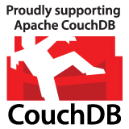

CouchHack is back!
On the weekend before CouchConf Berlin we are inviting all CouchDB hackers and those who want to be one to CouchHack.
CouchHack is a relaxing and intimate two-day hack event in Berlin, Germany. It revolves around anything CouchDB.
Previous CouchHacks have been run in Ashville, North Carolina and Oakland, California. CouchHack Berlin is the first proper CouchHack in Europe.
It is about time :) — See you in Berlin!
Co Up, from 11am Saturday November 5th.
CouchDB Developer Training, September 6th.
CouchDB User Group Berlin, November 2nd.
CouchConf Berlin, November 7th.
So far, we have these individuals signed up:
CouchHack is a non-profit community event, if you want to step in and support CouchHack, please get in touch.
—relax